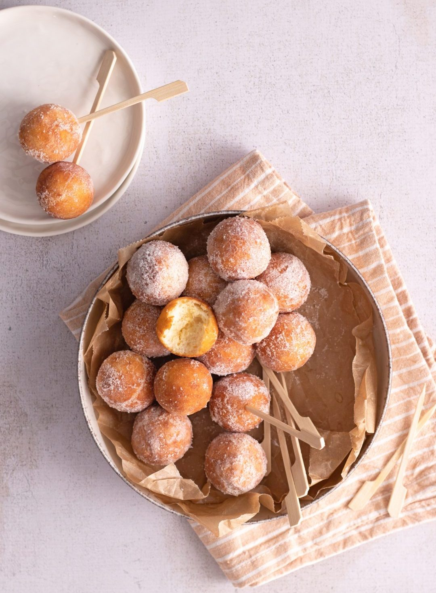

Miske s skuto recept

Ingredients (for 60 balls):
- cottage sheese (sweet) - 250 g
- flour (gladka) - 250 g
- sugar - 3 Tbsp
- egg - 2
- lemon juice/peel - 1 lemon
- rum - 1 Tbsp
- baking powder - 1 bag
- salt (pinch)
- oil (for frying)
Additonal possible ingredients:
- cinammon (one pinch)
- orange peel (1 tsp)
- vanilla sugar (max 3 Tbsp together with sugar if added)
Instructions:
- If the ricotta is very watery then place in a sieve over a bowl
and leave to drain for about 15 minutes.
- In a large bowl whisk together the flour, sugar, rum,
baking powder, salt and zest. Make a well in the middle add the
egg and ricotta.
- Mix together with a fork or spatula the ingredients almost come
together. Move the mixture to a lightly floured flat surface and
gently knead a few times to form a soft compact dough. The dough
will be a little sticky but do not add extra flour, lightly dust
hands with flour while kneading. Cover the dough with a tea towel
and let rest for 20 minutes.
- Remove small pieces of dough and form into balls the size
of a chestnut.
- In a medium high sided pot add about 3 inches of oil, heat
the oil to 340F (175C), keep the temperature as close to
this as possible.
- Fry 3-4 castagnole at a time, turning to fry golden brown on
both sides. Two minutes on each side should be enough time.
Remove them with a slotted spoon to a paper towel lined plate,
leave for a few seconds then roll in granulated sugar.
Place on a clean plate and serve immediately.
If baking:
- Pre-heat oven to 350F (180C), line a cookie sheet with parchment
paper.
- Place the castagnole on the cookie sheet and bake for about 12-15
minutes or until golden brown. Let cool and dust with icing sugar.